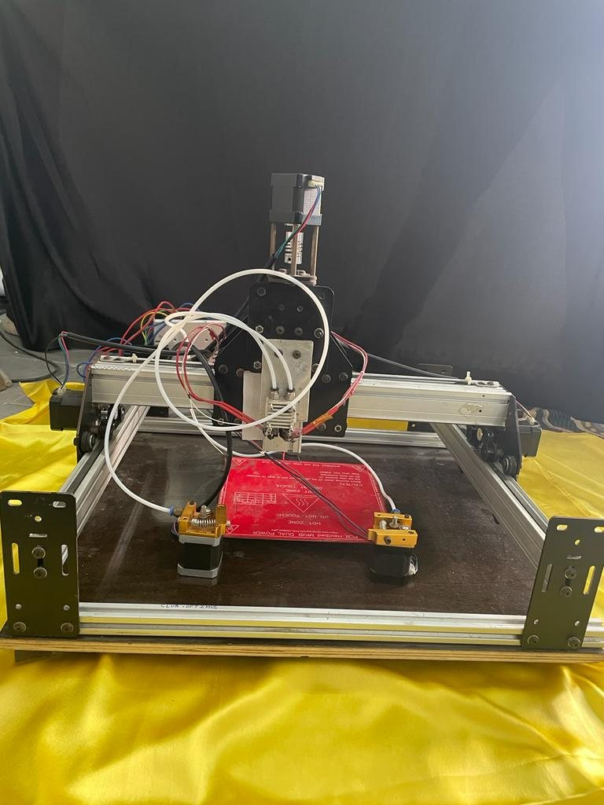
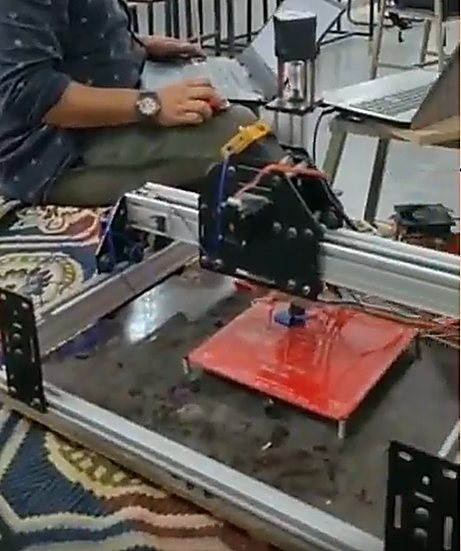
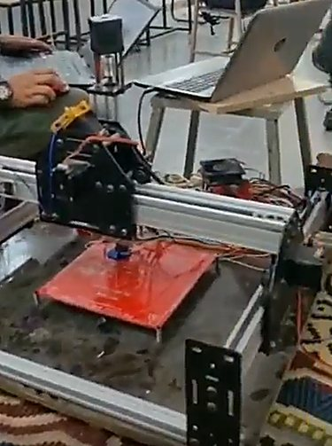
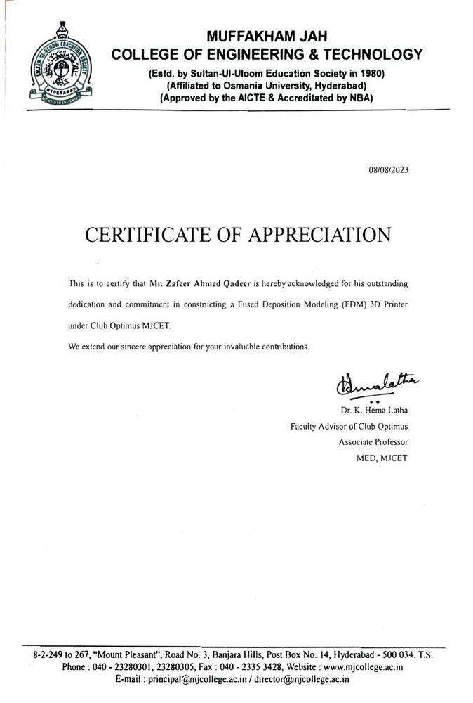

07 / PERSONAL BUILD
Built from components.
A custom FDM printer assembled, aligned, configured and debugged from individual components.
Assembled from bare stepper motors, drivers, a heated bed and frame hardware rather than a kit. I squared the axes, configured the firmware and debugged the machine until it printed reliably. It is the reason I am comfortable with the electromechanical end of a product: motors, drivers, thermal management and the gap between a bill of materials and a working machine.



The two smaller frames are stills pulled from video taken during the build.

OPEN FULL SIZE ↗Stepper drivesFirmware configurationAxis alignmentThermal tuningWiring and loomMechanical assembly